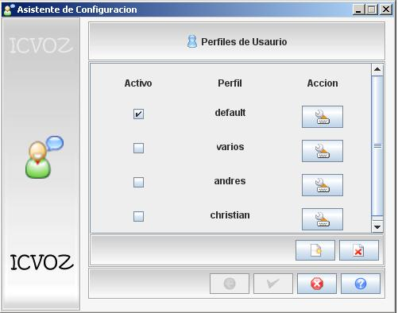
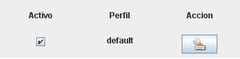
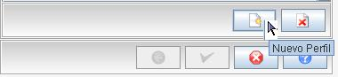
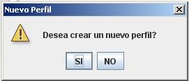
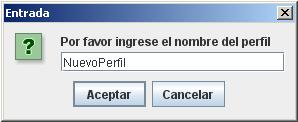
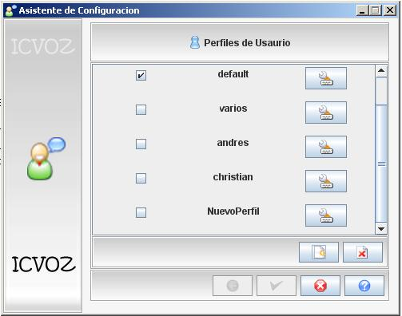
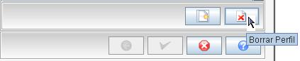
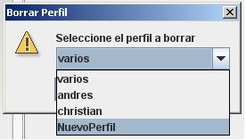
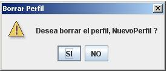
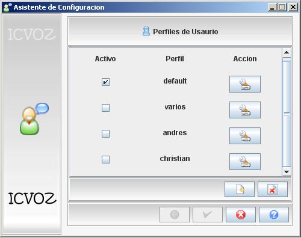

En este modulo se mostrará los perfiles que se encuentran guardados y
aparecera por defecto el perfil default el cual estara seleccionado. Cada
perfil tendra un boton a su lado derecho el cual sevira para configurar ese
perfil, tambien existira los botones nuevo que es para crear un nuevo perfil,
cancelar para salir de la configuracion de perfiles y el boton ayuda para
cualquier inquiuetud que el usuario tenga.

El prefil predeterminado es el default el posee una configuracion estandar
para cualquier usuario.

Para la creacion de un nuevo perfil se debe presionar el boton nuevo
perfil este te guiara hacia un cuadro te texto en donde te pedira si
deseas crear un nuevo perfil o no. Si aceptas crear un nuevo perfil
te aparecera un cuadro para que escribas el nombre del nuevo perfil
y este nuevo perfil aparecera en la tabla de perfiles de usuario.




Para borrar un perfil se necesita presionar el boton borrar
el cual desplegara un cuadro con la lista de los perfiles que
que desee borrar, seleccione la el perfil y este desaparecera
de la tabla. El unico perfil que no se podra borrar es el
default.
1)

2)

3)

4)
